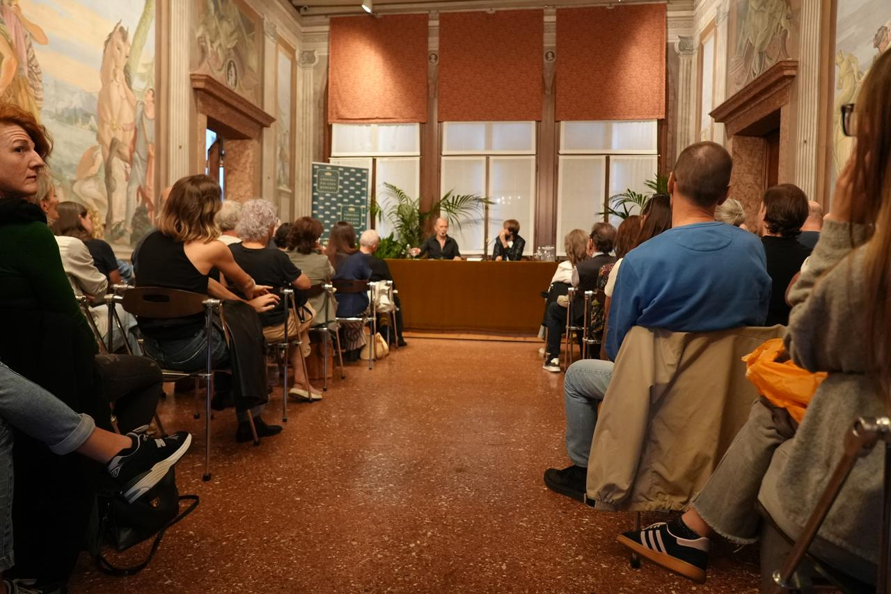
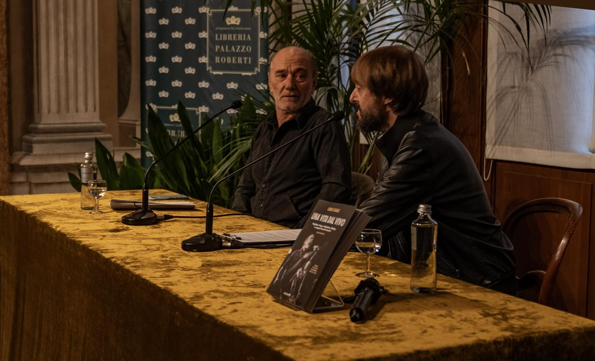
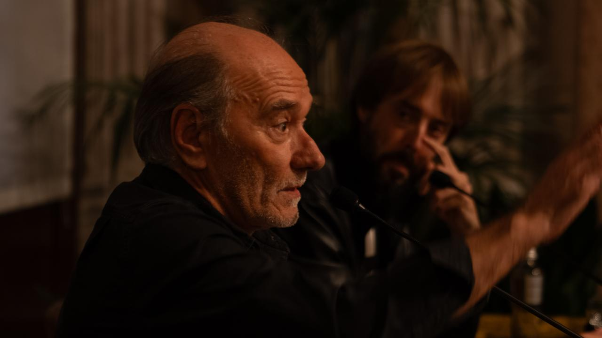
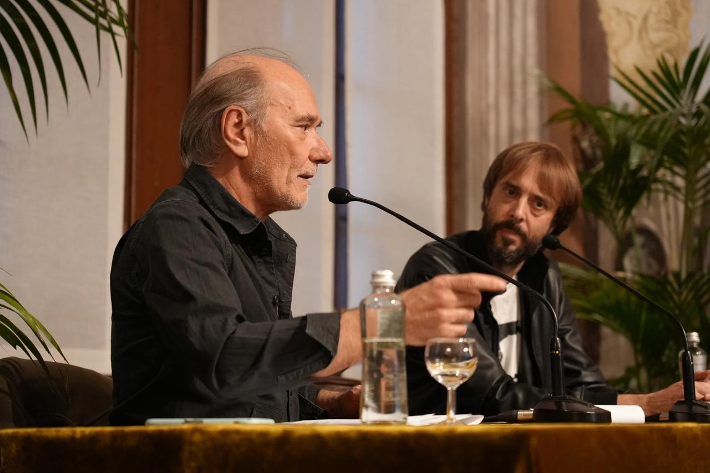
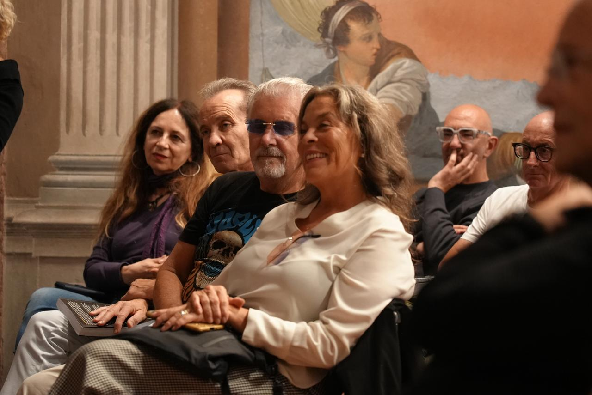
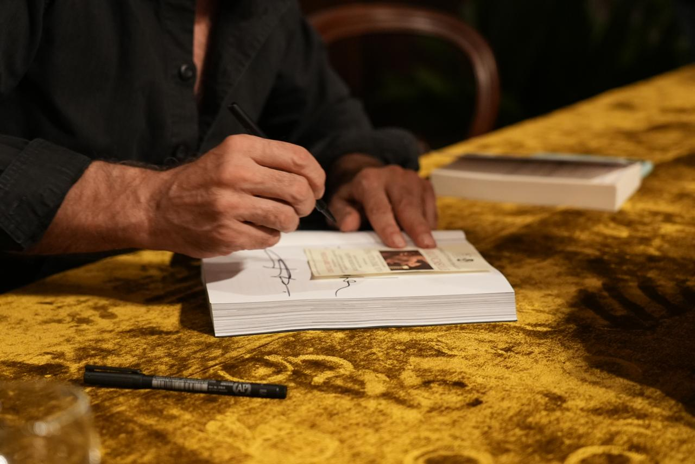
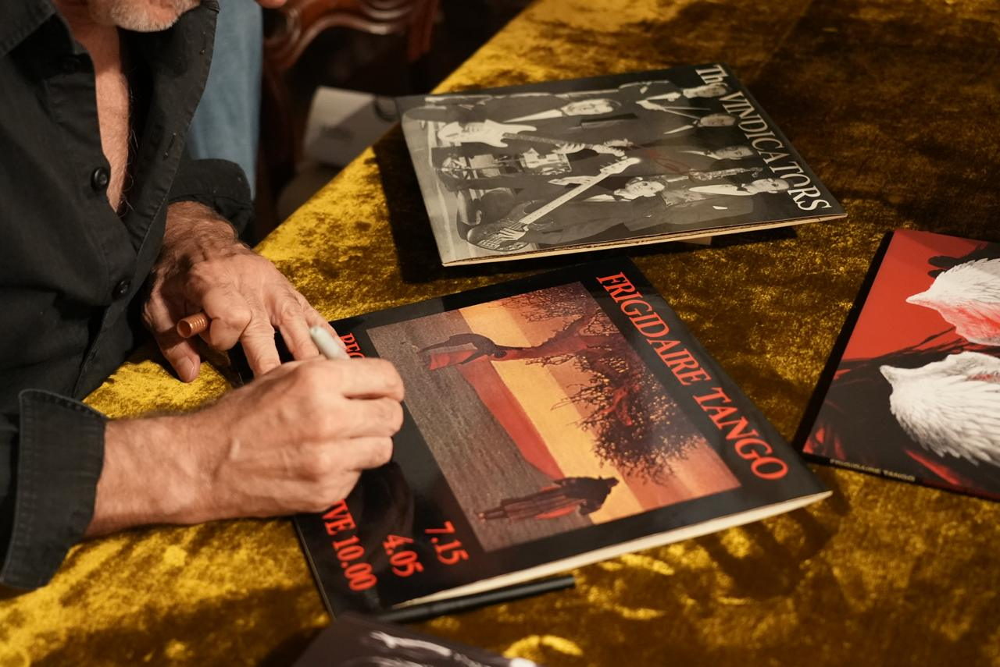
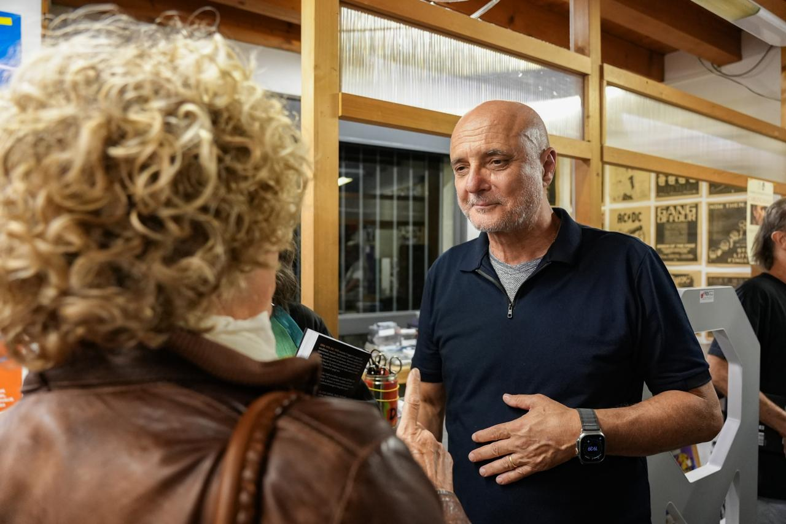
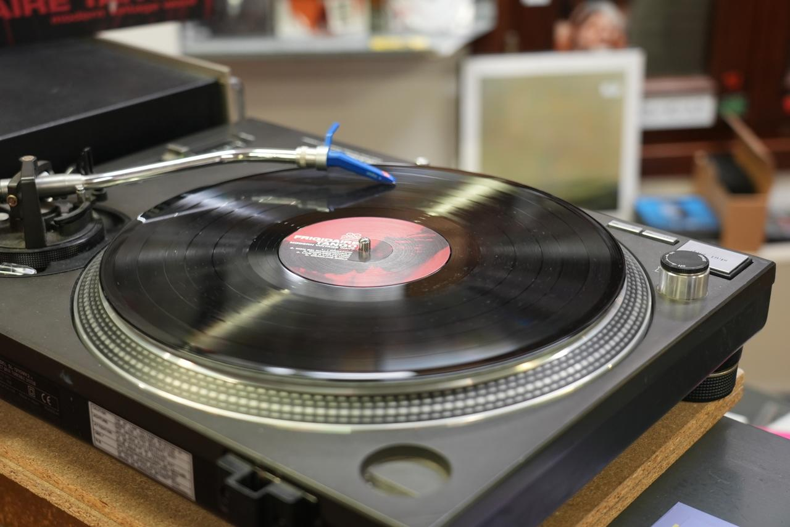
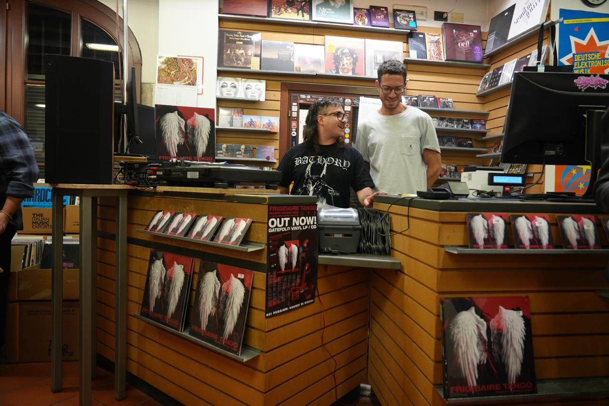

News
Nuovo libro · ottobre 2026
Sala piena a Bassano
Serata di presentazione · Libreria Palazzo Roberti, 9 ottobre 2026
Venerdì sera la Libreria Palazzo Roberti si è riempita di amici, ammiratori, musicisti e artisti per la presentazione di Una vita dal vivo (Interno4 Edizioni), il libro in cui Carlo Casale ripercorre cinquant'anni di musica, concerti e incontri nel rock italiano. Era il secondo appuntamento del club Alta Fedeltà, ideato da Francesco Nicolli e organizzato con Pick Up Records.
La conversazione tra Casale e il giornalista Filippo Bordignon è stata il cuore della serata. Bordignon ha aperto leggendo un brano del libro sul suo autore. Con le sue parole, il modo migliore per descrivere Carlo è questo:
«Carlo Casale, testa pensante con il coraggio di formulare pensieri originali, ha dimostrato in cinquant'anni di vita artistica come si possa fare rock venendo, geograficamente, da quel Veneto (…) Un uomo che ha compreso le necessarie complessità del progresso, ma che ha espanso la sua mente con le infinite distanze della musica (…) le forme dissonanti del punk e del post punk; che ha compreso il valore del battito costante, conferendo sapori inediti all'elettronica da club.»
Poi Casale ha preso la parola e la sala ha ascoltato. Il dialogo è passato tra aneddoti, storie di tour e ricordi di backstage. È tornato al 1977, agli Outkids, al 1980 e al giorno in cui ha fondato i Frigidaire Tango con Stefano Dal Col. Ha raccontato senza fronzoli e il pubblico lo ha seguito, attento e complice, tra risate e applausi.
Tra i presenti c'erano Stefano Dal Col, fondatore dei Frigidaire Tango, e la storica sezione ritmica della band, Maurizio Battistella (JM Le Baptiste) alla batteria e Diego Negrello al basso, insieme ad altri musicisti e artisti importanti della scena.
Finita la conversazione, Casale ha firmato copie del libro e dischi. Diversi collezionisti hanno portato LP originali dei Frigidaire Tango da fargli firmare. Un ospite ha portato perfino un biglietto originale del primo concerto della band. Casale era visibilmente emozionato.
La serata è proseguita al Pick Up Records, dove gli ospiti hanno brindato, ascoltato Modern Vintage Wave e ritrovato gli amici.











Archivio news
Per anno, mese e giorno
20266 notiziePresentazione del libro alla Libreria Palazzo Roberti · Esce Una vita dal vivo · European Affairs su Modern Vintage Wave · Indie for Bunnies recensisce Modern Vintage Wave · Fardrock recensisce Modern Vintage Wave · Indie for Bunnies: la band torna con "Fears"
- 9
PresentazionePresentazione del libro alla Libreria Palazzo Roberti
Sala piena alla Libreria Palazzo Roberti per il libro di Carlo Casale, seguita da un ascolto di Modern Vintage Wave al Pick Up Records.
- 2
LibroEsce Una vita dal vivo
Il libro di Carlo Casale, pubblicato da Edizioni Interno4, è accompagnato da un CD di My Heart Brut.
- 9
StampaEuropean Affairs su Modern Vintage Wave
Un articolo sulle nuove e vecchie abitudini della band, che descrive l'album come dieci registrazioni inedite realizzate nell'ultimo decennio.
- 19
StampaIndie for Bunnies recensisce Modern Vintage Wave
Include l'omaggio ad Adrian Borland dei The Sound.
- 4
StampaFardrock recensisce Modern Vintage Wave
Voto 7/10.
- 28
StampaIndie for Bunnies: la band torna con "Fears"
Articolo sul singolo che ha annunciato il nuovo album.
20161 notiziaVICE Italia: Lo faccio con un Frigidaire Tango
- —
StampaVICE Italia: Lo faccio con un Frigidaire Tango
Un lungo articolo sulla storia completa della band.
20132 notizieOndaRock recensisce l'album tributo · Chain D.L.K. recensisce The Original Demotape 1980
- —
StampaOndaRock recensisce l'album tributo
Voto 7/10.
- —
StampaChain D.L.K. recensisce The Original Demotape 1980
Voto 4,5/5.
20101 notiziaIntervista di OndaRock: Il ritorno del tango congelato
- —
StampaIntervista di OndaRock: Il ritorno del tango congelato
La band racconta di aver riaperto i cassetti e trovato materiale interessante.
20091 notiziaOndaRock recensisce L'illusione del volo
- —
StampaOndaRock recensisce L'illusione del volo
Voto 6,5/10.